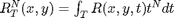
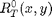
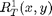
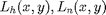

Contents
- input and GDAL Load
- compute the static length/area from geographic data
- calculate hillslope and channel distance
- import dynamic flood events extracted from USGS data
- compute moments of all events



- discharge importion
- concentration time lag of discharge
- rainfall importing
- calculate the moments of rainfall
function MomentSolve
input and GDAL Load
curFile = mfilename('fullpath'); [curDir,~,~]=fileparts(curFile); [progDir,~,~]=fileparts(curDir); addpath([progDir,'/Numeric']); GDALLoad(); dirBasic='G:\simulation\US_Basins\Kankakee_River\basic\'; dirRain='G:\simulation\US_Basins\Kankakee_River\rains_hourly\'; fileSite='G:\simulation\US_Basins\Kankakee_River\obs\05527500.shp'; strDEM=[dirBasic,'dem.tif']; strFDR=[dirBasic,'fdr.tif']; strStream=[dirBasic,'stream.tif']; xlsEvent='G:\simulation\US_Basins\Kankakee_River\result\Event_Timing.xlsx'; xlsHydrograph='G:\simulation\US_Basins\Kankakee_River\05527500_1h.xlsx'; noDataVal=-9999;
compute the static length/area from geographic data
[FDR,geoTrans,proj]=ReadRaster(strFDR);
stream=ReadRaster(strStream);
stream(isnan(stream))=0;
stream=logical(stream);
basinMask=~isnan(FDR);
DEM=ReadRaster(strDEM);
GM=1.364364;
[xOut1,yOut1,wktStr]=readShapeLoc(fileSite,0);
[xOut2,yOut2]=ProjTransform(wktStr,proj,xOut1,yOut1);
[rowOut,colOut]=Proj2RowCol(geoTrans, yOut2,xOut2);
isGCS=IsGeographic(proj,geoTrans);
% slope, routing length and grid area of each grid
[slope,nextLen]=CalSlope(rowOut,colOut,basinMask,DEM,FDR,GM,geoTrans,proj);
[~,gridArea]=RasterArea(DEM,geoTrans,isGCS);
calculate hillslope and channel distance

[hDist,nDist]=CalDist(basinMask,rowOut,colOut,FDR,slope,nextLen,stream);
import dynamic flood events extracted from USGS data
data=xlsread(xlsEvent); nEvents=size(data,1); % number of events rainBeginNum=data(:,1); %the rainfall start time step of all events rainEndNum=data(:,2); %the rainfall ending time step of all events runoffBeginNum=data(:,3);% the stream flow start time step of all events runoffEndNum=data(:,4);% the stream flow ending time step of all events
compute moments of all events
[rows,cols]=size(basinMask);
Rt0=nan(rows,cols);
Rt1=nan(rows,cols);
Rt2=nan(rows,cols);
rain=nan(size(basinMask));
for ie=1:nEvents
% initialize the precipitation moments by zeros
Rt0(basinMask)=0;
Rt1(basinMask)=0;
Rt2(basinMask)=0;
rain=nan(basinMask)=0;
discharge importion
datesDischargeRegion=['A' num2str(runoffBeginNum(ie)) ':A' num2str(runoffEndNum(ie))]; runoffRegion=['M' num2str(runoffBeginNum(ie)) ':M' num2str(runoffEndNum(ie))]; % instantenous runoff, Q(t) Q=xlsread(xlsHydrograph,1,runoffRegion); if max(Q)<350 % skip the event if the flow is too small (not an event) disp(['event ' num2str(ie) ' maximal flow is smaller than the threshold, skip...']) continue; end % fill invalid discharge values by interpolation Q(Q==noDataVal)=NaN; Q=impaintNaN(Q); [~,datesRTxt]=xlsread(xlsHydrograph,1,datesDischargeRegion); datesQ=datenum(datesRTxt,'yyyy/mm/dd:HH'); Dt=datesQ(1:end)-datesRain(1);
concentration time lag of discharge
mcQ=sum(Dt.*Q)./sum(Q);
rainfall importing
rain date records of an event
datesRainRegion=['A' num2str(rainBeginNum(ie)) ':A' num2str(rainEndNum(ie))]; % rain dates of the event if mcQ>19 disp(['event ' num2str(ie) ' not flash enough, skip...']) continue; end
calculate the moments of rainfall
for i=1:length(datesRain) Rt0= end
end
end